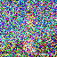
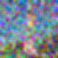

1.1 Forward Process
Approach
Here I wrote the forward process which was the equation which adds noise to an image with mean sqrt(alpha) and variance sqrt(1-alpha)
Results

Original Image
Image with noise added t=250
Image with noise added t=500
Image with noise added t=750
1.2 Classical Denoising
Approach
Here I denoised by adding a gaussian filter blur to the noised images with kernel 13 sigma 2
Results
Gaussian Blur Denoised t=250
Gaussian Blur Denoised t=500
Gaussian Blur Denoised t=750
1.3 One Step Denoising
Approach
Use the pretrained difussion model and equations given to recover the image from the noise. THe model predicts the noise, and the equation is used to reocver the predicted image.
Results
Original Image
Image with noise added t=250
One step denoised t=250
Image with noise added t=500
One step denoised t=500
Image with noise added t=750
One step denoised t=750
One Step Denoised Result
Gaussian Blur Denoised t=750
1.4 Iterative Denoising
Approach
We can get a much better result if we denoise in steps to get the clear image. We first create a list of timesteps strided timestpes. For each timestep we use this equation to recover the next iteration of denoised image.